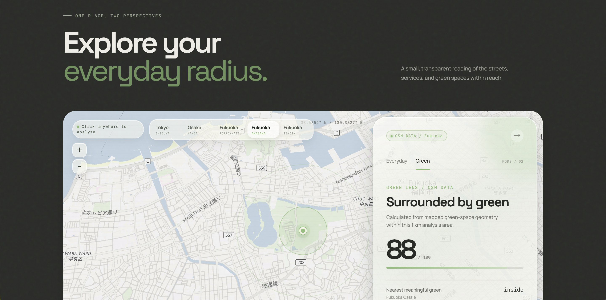
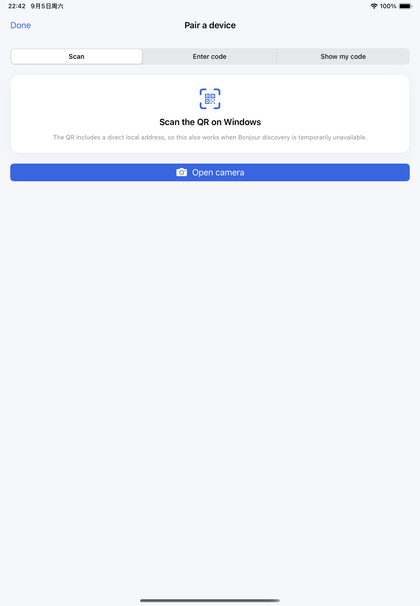

01
Urban Lens
A location-based urban analysis app for understanding everyday access and nearby nature.
View live project ↗ReactMapLibreCloudflare
BACKEND / PRODUCT ENGINEER
I care about the systems underneath and the experience on top — turning complex problems into clear, useful products.
const engineer = {
stack: ["Python", "AWS"],
focus: "backend × product",
status: "shipping"
};
▊
PROFILE
Backend / Product Engineer building and improving an electricity retail customer information system across backend, frontend, AWS infrastructure, testing, and production operations.
Currently based in Fukuoka, Japan.
EXPERIENCE
System delivery, billing workflows, integrations, migration, and production improvement.
IoT integration testing and a reviewed BFF / microservices prototype.
OCPP 2.0.1, MQTT recovery, reliability, testing, and launch support.
Master of Agricultural Science · English-taught program and thesis.
SIDE PROJECTS
Personal projects.
More details soon.

